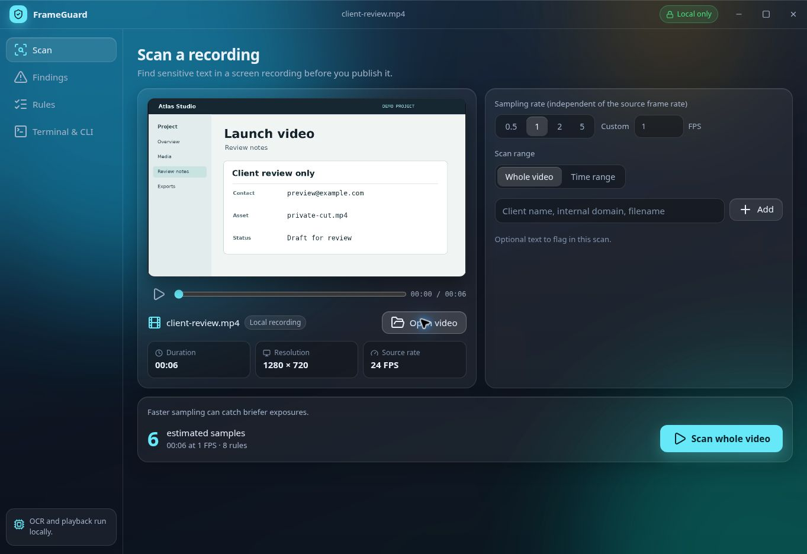
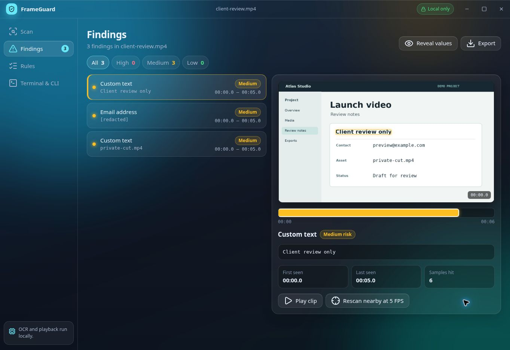
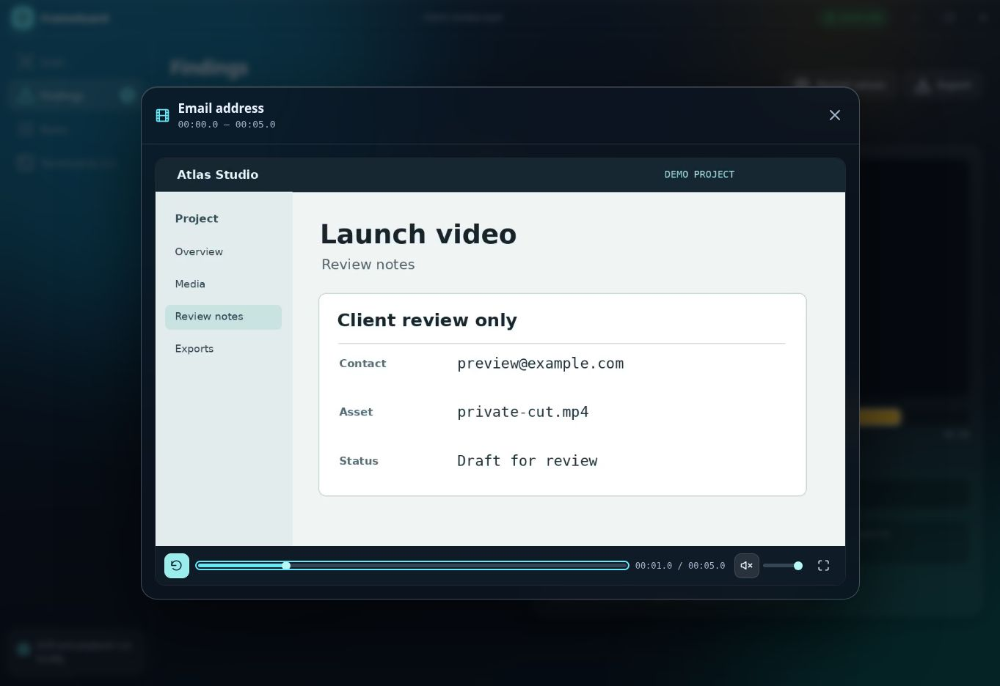

Find private text in screen recordings.
FrameGuard scans videos on your device and shows when sensitive text appeared. Review the flagged moments before you share a recording.
Windows and Linux · Desktop and terminal

Scan workspace with a sample recording
Review a recording
Scan a whole MP4 or focus on the part you’re preparing to publish.
-
Choose what to scan
Open a recording, choose a sampling rate, then set the time range or scan the entire video.
-
Flag the text that matters
Use the built-in rules or add client names, private asset filenames, and phrases to your wordlist.
-
Review and export
Check findings by severity, play the flagged interval in the desktop app, and export JSON or CSV.
Local OCRYour recordings and scan results stay on your device. Optional keyword setup fetches a public catalog.
Inspect the flagged moment
Open a finding to see the matched region or play just its clip.

FindingsReview the rule, timestamp, severity, and sampled frame.

Clip previewSeek and replay within the flagged interval.
Download FrameGuard
Pick your platform and the way you want to scan.
Desktop (GUI)Installer and guided component setup
Download EXE
Terminal (TUI + CLI)Interactive terminal and scriptable scans
Download ZIP
Installation instructions
Run the EXE and follow the on-screen scanner setup. For the terminal build, extract the ZIP and run the following command from its folder.
.\frameguard.exe tui
The terminal build uses the desktop scanner components or FFmpeg, ffprobe, and Tesseract with English data on PATH.
Desktop (GUI)App launcher, OCR, and video playback
Download DEB
Terminal (TUI + CLI)Installs the frameguard command
Download DEB
Installation instructions
From your download folder, install the package you chose. APT resolves the scanner dependencies.
sudo apt install ./FrameGuard_Linux_x64_Desktop.deb
sudo apt install ./FrameGuard_Linux_x64_Terminal.deb
frameguard tui
Find version history and package details on GitHub Releases.